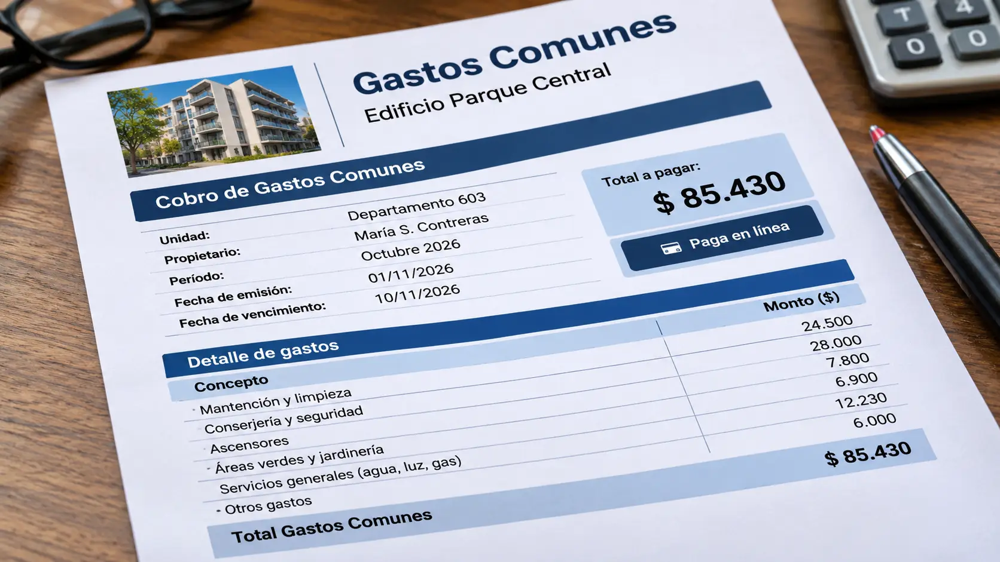

Cuando un copropietario no paga, el déficit lo terminan cubriendo los demás. Conoce el marco legal y las estrategias para cobrar gastos comunes sin dañar la convivencia del edificio.

En Igmacob Chile hemos visto cómo la morosidad de gastos comunes golpea de una forma particular: a diferencia de una empresa que pierde margen cuando un cliente no paga, en un edificio o condominio el déficit que deja un copropietario moroso lo terminan financiando sus propios vecinos, a través de mayores cuotas o recortes en mantención y servicios comunes.
Esto genera una tensión adicional: el comité de administración debe cobrar a alguien con quien convive día a día, lo que muchas veces lleva a postergar la gestión por evitar el conflicto. Esa postergación es, justamente, lo que permite que la deuda crezca hasta volverse difícil de recuperar.
En Chile, la cobranza de gastos comunes está regulada principalmente por la Ley de Copropiedad Inmobiliaria. Algunos puntos clave que toda administración debería conocer:
Judicializar debería ser el último recurso, no el primero. Antes de eso, conviene agotar la gestión extrajudicial:
¿Tu edificio tiene copropietarios con meses de atraso en gastos comunes? Escríbenos por WhatsApp y evaluamos tu caso.
Cuando la gestión extrajudicial se agota, la administración puede avanzar a la vía judicial. El certificado de deuda emitido conforme a la ley, al tener mérito ejecutivo, permite un proceso más directo que otros tipos de cobranza: se presenta la demanda ejecutiva, se notifica al copropietario moroso y, de no haber pago u oposición válida, se puede proceder al embargo de bienes para cubrir la deuda.
Puedes revisar el funcionamiento general de este tipo de proceso en nuestra guía de cobranza judicial, aplicable también a certificados de deuda de gastos comunes.
En Igmacob Chile apoyamos a administraciones de edificios y condominios en la gestión de morosidad de gastos comunes, desde el primer recordatorio hasta la derivación a cobranza judicial cuando es necesario, siempre cuidando la relación entre vecinos. Si prefieres evaluar si te conviene externalizar esta gestión, revisa también nuestra guía de outsourcing de cobranza.
Si tu comité de administración necesita ayuda para ordenar la cobranza de gastos comunes, contáctanos. Evaluamos tu caso sin costo.
Hablar con un ejecutivo ahoraLa deuda genera intereses según lo establecido en el reglamento de copropiedad, y si la morosidad persiste, la administración puede iniciar acciones de cobranza extrajudicial y, posteriormente, judicial contra el copropietario moroso.
Sí. La Ley de Copropiedad Inmobiliaria otorga a los certificados de deuda de gastos comunes mérito ejecutivo, lo que permite iniciar un juicio ejecutivo para cobrar directamente, sin necesidad de un juicio declarativo previo.
La ley permite restringir el uso de ciertos bienes y servicios comunes (como estacionamientos de visita o áreas de uso común no esenciales) a los copropietarios morosos, siempre que esté regulado en el reglamento de copropiedad, pero no servicios básicos esenciales.
Depende del monto acumulado y la disposición del copropietario a negociar, pero en general se recomienda agotar la gestión extrajudicial y proponer convenios de pago antes de los 90 días de mora, para evitar que la deuda crezca y se complique su cobro.
Sí, especialmente en edificios o condominios con varios copropietarios morosos, donde el comité de administración no tiene el tiempo ni la experiencia para gestionar cobros de forma sistemática sin dañar la convivencia entre vecinos.